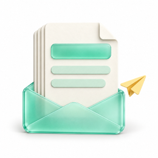
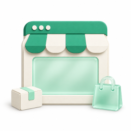

Hala green is for brand and primary actions only. Ink carries text and strong UI. Surfaces are white on a mint-gray canvas. Status colors are used only to show status.
Light and Dark
The main colors, in the same order in each mode. Each swatch shows the Figma variable, the CSS variable and the hex. Click a swatch to copy its hex.
Gradients
Use sparingly. Same in both modes.
Card art
Physical card surfaces. Same value in Light and Dark — cards never theme. The other card designs in Figma (Expense, Cash, SDB and Hurr) are added with the Payment cards page.
Use / Don’t
Three habits that keep color meaningful.
Hala DNA · Foundations
Color roles
How the colors on the Colors page work together in real UI, shown in Light and Dark.
Role samples
Everyday combinations, each in Light and Dark with the same tokens.
Use / Don’t
Three habits that keep each color doing its one job.
Hala DNA · Foundations
Typography
Hala DS Font for interface text in English and Arabic, and Hala Mono for numbers, amounts, IBANs and codes. They share the same proportions, so mixed text lines up.
Type scale
Sizes come from the Responsive collection, so Web and Mobile switch with the screen. Arabic is covered below. Until the Hala font files are added, the samples render in IBM Plex.
Arabic and RTL
Arabic text is set 1–2 px larger than English with taller line height, because Arabic letters look smaller at the same size. Numbers stay Western (0–9) and Mono, read left to right.
English · LTR
Good morning, AbdulazizYour POS sales grew 12.4% compared with last month.
Nour TradingToday, 09:30 · Transfer
− 25,000.00
Continue →
Arabic · RTL
صباح الخير، عبدالعزيزنمت مبيعات نقاط البيع بنسبة 12.4% مقارنة بالشهر الماضي.
نور للتجارةاليوم، 09:30 · تحويل
− 25,000.00
متابعة ←
All tokens
Every text style in the four Responsive modes. Bright values change from Web; dimmed values match it. Arabic modes have no letter spacing.
Use / Don’t
Three habits that keep type consistent between Figma and code.
Hala DNA · Foundations
Space, radius, size & stroke
The measurements behind every Hala screen: spacing, radius, stroke and size. Figma names carry the value (space/16, radius/8), and each one maps to a CSS variable (--space-4).
Spacing
A 4 px base. Small steps inside components, large steps between them. On mobile, the screen margin is 16 pt.
Component padding
Control heights
Radius
Soft, generous corners. Buttons and chips are always pills. A container’s radius is its child’s radius plus the padding between them.
Icons, layout and breakpoints
Icons · 1.7 stroke, roundOutline icons on a 24 grid, currentColor. Filled only for active tab bar items.
Breakpoints
Layout
Component space steps
Off-scale steps that exist for one component. Use them only there.
Stroke
Line weights for borders, rings and icons. Older components may use the aliases stroke/default (stroke/1) and stroke/focus (stroke/2).
Sizes
Fixed heights and widths. --size-control switches from 44 on web to 52 on mobile, so use it on buttons and controls.
Platform
Native sizes that differ between iOS (pt) and Android (dp). Same names on both platforms.
Use / Don’t
Three habits that keep spacing, height and corners in step with the code.
Hala DNA · Foundations
Elevation
Shadows are tinted with ink and pulled in with a negative spread, so they read soft and green-gray rather than black. Most cards have no shadow; elevation means something floats above the page.
Levels
Five levels plus the brand glow, card lift and floating tab bar, in each mode. Light uses ink-tinted shadows. Dark uses deeper black shadows with a faint edge, because ink shadows disappear on a dark background.
Use / Don’t
Four habits that keep elevation meaningful.
Hala DNA · Foundations
Motion
Calm and smooth, like iOS. Small feedback (hover, press) stays instant; big surfaces glide on smooth springs and settle without overshoot. Exits take about 65% of the enter time. Respect reduce motion: swap movement for a short fade.
Durations
Seven durations. Each dot moves on the standard curve at its token’s time.
Curves
Smooth springs for entering and moving; the same spring at about 65% of the time for exits; a light spring with a hint of bounce for mobile sheets.
Animation styles
Reusable styles saved in Figma. Backdrops fade first; panels follow 50 ms later.
Reduce motion
When the system asks for reduced motion, nothing moves: every entrance becomes a 200 ms fade (Motion/Reduced/In). Spinners stop; progress stays.
Arabic and RTL
Direction follows the reading start: in Arabic the drawer enters from the left (Motion/Drawer/In · RTL). Vertical motion — sheets, toasts, tooltips — is the same in both directions.
Use / Don’t
Four habits that keep motion calm and useful.
Hala UI · Foundations
Icons
Hala uses its own twotone icon set: 1,027 icons on the Source board in HALA DNA. The repo’s 85 approved icons are shown below with their Hala match. Eight have no Hala match and use Lucide (ISC), drawn at stroke 1.7.
Anatomy · 16 × 16 grid
Live area 13 × 13. 1.5 px padding on each side, as drawn in HALA DNA.Two tones. Primary for the main shape, secondary for the detail.Filled shapes. No strokes, color from currentColor.
Tones · next to Plex Sans 15/500
Sizes
Four sizes. Standalone icons sit in a tile.
Approved set
icons from the repo, grouped by area. Use the repo name in code. Icons marked LUCIDE have no Hala match. Click an icon to copy its name.
Color and tiles
Icons take the color of their text. Put them in a tile when they stand alone. Status colors only for status.
In components
Spacing between icon and label, and the icon size each component uses.
Buttons · 20 px · gap 8
New transferExport
Icon goes before the label. Trailing icons only for direction (→) or menus (⌄). Icon-only buttons need a tooltip and aria-label.
List row · input · badge
Main accountSA57 •• 1951
Search beneficiaries
SettledFrozen
Mobile tab bar · 22 ptActive tab: Green 600 for the icon and label. Inactive tabs use the tertiary text color.
Arabic · right to left
Flip icons that show direction or movement. Keep icons that show objects or symbols as they are.
Mirror in RTL
Don't mirror
Use / Don’t
Four habits from the repo.
For developers
Draw icons through one wrapper on each platform so every icon gets Hala's names, sizes and tones.
Hala UI · Foundations
Hala logo
The HALA wordmark and the H symbol, with the arrow inside the H. Use the supplied components; never redraw, retype or edit the logo.
Light and Dark
Wordmark where there is room; symbol for small spaces like app icons, avatars and the collapsed sidebar.
Hala green is the logo color. Use white on green, ink or photo backgrounds; one-color black only where color printing isn’t possible.
Clear space and minimum size
x = the width of the H stem. Keep at least 2x free on every side. Below 80 px wide, switch to the symbol; below 24 px, put the symbol on a green tile.
2x2x2x2xx
Minimum size · actual pixels
Wordmark 80 px · 20 mm
Symbol 20 px · 6 mm
Favicon 16 px tile
Below 80 px wide, switch from the wordmark to the symbol. Below 24 px, put the symbol on a green tile so it stays readable.
In the product
Logo height in each place. The logo is not repeated on every app screen; the app icon already says who we are.
PlaceLogoHeightNotes
Email signature
Mono
Brand
Payment scheme marks
Placeholders only. mada, Visa, Mastercard, Apple Pay and Google Pay marks come from each scheme’s official kit — drop them into Scheme mark; never redraw, recolour or stretch them.
Use / Don’t
Four rules from the repo.
App icon · iOS
One 1024 × 1024 square with no transparency and no rounded corners; iOS applies the mask. The symbol fills about 56% of the height. Since iOS 18, also supply dark and tinted versions.
Light · dark · tinted
Light
Dark
Tinted (gray, system colors it)
Export sizes
On the home screen
App icon · Android
Adaptive icon: a 108 dp foreground layer (the symbol) over a green background layer. Keep the symbol inside the 66 dp safe circle, because launchers crop to different shapes. Add a monochrome layer for themed icons.
Anatomy · 108 dp
108 dp layer72 dp visible66 dp safe
Launcher masksThemed (Material You) · Play Store
Light theme
Dark theme
Play 512 × 512
Web
Favicon set, home-screen icon for iPhone, PWA icon and link preview image.
Browser tab
Hala Business · Dashboard×
Inbox
business.hala.com/dashboard
Favicon set
Link preview · 1200 × 630
business.hala.comHala Business
Logo centered, 38% of the width, inside the middle 80% so platforms that crop to square still show it.
In the product · web header and sidebar
AccountsCardsPOSPricing
Open account
Header: wordmark 24 px high, left-aligned, links to home. Sidebar expanded: wordmark 22 px. Collapsed: symbol 28 px.
Mobile app
Launch screen and logo placement inside the app. The logo is not repeated on every screen; the app icon already says who we are.
Launch · light
Launch · dark
Sign-in · wordmark 32 px
Business banking
Home header · symbol 28 px
Good morningKhamis Arabia
Launch screen: symbol only, 64 pt, centered. No loading text or tagline. It should look like the first frame of the app.
Files to export
Give developers this set. SVG wherever the platform accepts it.
FileSizeFormatNotes
Hala UI · Foundations
Illustrations
Small empty-state scenes that explain absence without adding visual noise.
Balanced frosted glass and layered paper
Dominant layered-paper heroes with smaller supporting forms. Frosted mint-glass inserts provide material contrast. Card, shield, envelope, plane, bag and box use consistent subordinate scales.
Payment gatewaypayment-gateway.png

Online invoicingonline-invoicing.png

Ecommerceecommerce.png
Samples
One scene per empty state, shown in Light and Dark. The artwork for these scenes is still in design.
Illustration / Empty / No activity
Light
Artwork in design
Dark
Artwork in design
Illustration / Empty / No results
Light
Artwork in design
Dark
Artwork in design
Illustration / Empty / No connection
Light
Artwork in design
Dark
Artwork in design
Use / Don’t
01
Do
Keep one centered focal object with the locked composition.
Don’t
Add decorative noise or a second focal object.
02
Do
Use 2px rounded linework and 12px illustration corners.
Don’t
Change line weight or corners per scene.
03
Do
Change Light and Dark through Hala color roles only.
Don’t
Redraw or recolor geometry for Dark mode.
On each platform
Same file names everywhere. Illustrations sit above the empty-state title and are decorative, so screen readers skip them.
One button system for web and mobile. Pills everywhere, IBM Plex Sans labels, and one gradient primary per screen. The default buttons on this page respond to hover, press and keyboard focus.
Sizes
Large is the mobile default. Web forms use Medium; dashboard toolbars and tables use Small and X-small.
Variants and states
Shown at Large. Every size uses the same colors per state.
DefaultHoverPressedFocusLoadingDisabled
Arrow button
Icon only. Moves the user to the next or previous step in onboarding and multi-step flows. Always add an aria-label: "Next step" or "Back".
Shapes · sizes
Variants · direction
States · wide 120 × 54
Small buttons · web dashboard
Toolbars, card headers and table rows in Hala Dashboard WEB.
Toolbar · S 36Segmented · range
Inline · XS 28Icon buttons · 32Filter chips
Small buttons · mobile
The visible button can be smaller, but the tap area is never under 44 × 44.
Quick actions · 56Top bar · 40
Amount chips · 36Inline · 32
Arabic · RTL
Every button has a right-to-left version. RTL flips the icon order, mirrors arrows and the send icon, and uses the Arabic type sizes. Hala DS Font includes Arabic, so the text styles stay the same.
Usage
Hala UI · Components
Button groups
Related buttons shown together: switching views, picking one or several options, and pairing actions. Every example with a "Live" tag works.
Which group to use
They look alike but behave differently. Choose by what a tap does.
Segmented control
Pick one of 2–5 views of the same content. The selected segment is a white pill that slides on a mint-gray track. It switches immediately; there is no Apply.
Toggle and chip groups
For choosing values, not views. Chips wrap onto new lines; toggles stay on one line.
Single choice · amount chipsLive
Monthly card limitSAR 10,000
Multi choice · filter chipsLive
Payment methods · 2 selected
Icon toggles · view and chartLive
Bar chart
Icon-only groups always have a tooltip and aria-label.
Attached buttons and split button
Outline buttons that share borders. Use them in toolbars and table headers. A split button puts the main action and its alternatives in one control.
Attached · toolbarMax 3 buttons with labels, 5 icon-only. Destructive is last and red. More than that: use a "More" menu.
Split button · exportLive
Action pairs · web and mobile
On web the primary is on the right, where the eye ends. On mobile the buttons stack full width with the primary on top, within thumb reach.
Web · dialog, drawer, form footer
Mobile · bottom of screen
Review transfer
ToNour Trading
Amount25,000.00
Primary 52 pt, secondary as a 48 pt text button. Gap 10 pt. 16 pt side margins, above the home indicator.
Mobile · segmented and split
Segments fill the width with equal sizes. On mobile, a split button's extra options open in an action sheet.
Full-width segmentedLive
New transfer
To any Saudi bankArrives within minutes via sarie.
Split → action sheetLive
StatementSeptember 2026 · Main account
Arabic · RTL
Every group has a right-to-left version. RTL reverses the order so the first item starts on the right, puts the web primary on the left, and uses the Arabic type sizes. The pager keeps its arrows in place.
Rules
Hala UI · Components
Selection controls
Checkboxes, radios, toggles, selection cards, segmented controls and chips. One green for on, one ink for focus. Every example with a Live tag works.
States
The control is 18 px. The tap area is the whole row, at least 44 px high.
DefaultHoverPressedFocusDisabledError
Checkbox
For independent choices, and for agreeing to terms. A parent shows mixed when only some children are on.
Group with parentLive
Radio
One choice from 2–5 options that all need to be visible. More than 5: use a dropdown. Always preselect a safe default.
List · settlement scheduleLive
Inline · horizontalLive
Card typeWho pays the fee?
Choose who pays the SAR 5 fee.
Toggle
For settings that apply immediately, with no Save button. If the change needs a server call, show loading on the knob. If it is risky, confirm first.
Card controlsLive
Sizes
Selection cards
For choices that need a description, a price, or a picture. The whole card is the tap target. The corner control tells single from multi choice.
Card statesradius 14
Image cards · single choice · business typeLive
Plan cards · single choiceLive
Tiles · multi choiceLive
Segmented control and chips
Segmented switches a view, with 2–4 options. Choice chips pick one value. Filter chips toggle many.
Segmented · L 44 / S 32Live
Choice chips · oneLive
Filter chips · many
Mobile app · iOS and Android
Same tokens, bigger targets. Controls sit on the right of full-width rows. The whole row is tappable, and longer choices open in a sheet.
Card settings · toggles L 52×32
Bottom sheet · radio list
Spending limit
Selection cards · single choice
Filters
StatusBranch
Filter sheet · checkboxes and chips
Which control to use
Hala UI · Components
Feedback
Alerts, notifications, toasts and snackbars. Pick by how urgent the message is and whether the user has to act. Every example with a Live tag works.
Which one to use
Pick by how urgent the message is and whether the user has to act.
Tones
Four status tones plus neutral. The icon carries the meaning too, so color is never the only signal.
Inline alerts
Sit in the page next to what they describe. They stay until the problem is fixed or the user closes them.
Live
Compact · one line, inside cards and forms
Page banner · full width, above the page header
Notifications · web
Tasks that need action. They stay until the user closes them or acts. Maximum 3 visible; the rest go to the notification center.
Live · stack
Live · notification center
Toasts · web
Short confirmation after the user does something. Bottom-right, auto-close after 4 seconds, or 6 seconds with an action. Errors stay until closed. Pausing on hover keeps them open while being read.
Live
Page content
Mobile app · iOS and Android
Snackbars replace toasts: dark, one line, at the bottom of the screen, with an optional Undo. In-app banners slide in from the top for things that happen in the background.
SnackbarLive
In-app banner · top
Auto-hides after 4 seconds. Swipe up to dismiss, tap to open. The same design is used for push notifications on the lock screen.
Inline alert · mobile
Inbox · swipe to actLive
Tap a row to reveal Done. Tap again to clear it.
Rules
Hala UI · Components
Badges
Small labels for status, counts, trends and features. They are not buttons: badges don't react on hover unless they are removable tags. Every example with a Live tag works.
Sizes
Always pill-shaped. Text is sentence case, except the short feature labels (NEW, BETA), which use IBM Plex Mono caps.
Status badges
One fixed color per status across web and mobile. Each status has its own icon or dot, so color is never the only signal.
Counters and dots
Counts show how many items need attention. Over 99 shows 99+. A dot means something new, without a number.
On icons and avatarsLive
Count · redNew · dotOnlineOffline
In navigation · sidebar and tab bar
Feature, trend and verification
Feature labels promote; trends compare with the previous period; verification shows trust.
Tags can be removed (applied filters, team labels). On card art, badges use frosted white so they read on any color.
Removable tags · applied filtersLive
Team labels
On card art
•••• 4417
•••• 2086
In context · web and mobile
Tables use the dot style to keep rows calm; mobile lists use the subtle badge under the amount.
Web · transactions tableLive · click a status
MerchantMethodAmountStatus
Mobile · activity list
Mobile app · iOS and Android
Same badges, sized for touch screens: Large on detail screens, Small in list rows. Filter chips carry their own count.
Transaction detail · large
JBJarir Bookstore− 1,249.00 SAR
CardVisa •• 4417 Virtual
Spent byOmar Bakr Marketing
ReceiptMissing
Filter chips with countsLive
Cards list
Marketing team
•• 4417 · Virtual
Active
Travel
•• 2086 · Physical
Frozen
SubscriptionsNEW
•• 9120 · Virtual
Expires soon
AA
Abdulaziz AliPRO
Verified account
Rules
Hala UI · Components
Inputs
Floating-label fields from the sign-up flow, extended to every state and input type. Web and mobile share the same field; dashboards use the compact sizes. Every example with a Live tag works.
Anatomy
The label sits inside the field as a placeholder and moves up when the field is focused or filled.
Text field states
The helper line is replaced by the error message, never shown together with it.
Password
Show/hide toggle, a 4-step strength meter and a live checklist of rules.
OTP code
Six boxes, numeric keyboard, auto-advance, backspace goes back, paste fills all. Submits on the sixth digit.
Dropdowns
Select for short lists, a searchable combobox for long lists (banks, cities), multi-select for filters. On mobile all three open as a bottom sheet.
Specialised fields
Formatted while typing so the value is easy to check. Numbers use IBM Plex Mono.
Compact fields · web dashboard
No floating label; the context gives the meaning. Used in toolbars and table filters.
Selection controls
Visible boxes are 18 px; the tap area includes the label.
Usage
Hala UI · Components
Accordions
Accordions show and hide sections of content so long pages stay scannable. The same component works on web and mobile; only the sizes change. Every example with a Live tag works.
Anatomy
The whole header row is the button. The chevron is on the right and turns 180° when the section opens.
States
Header row states. Text and chevron colors stay readable in every state; only the background and ring change.
Variants · web
Three styles for three contexts. Pick one per page.
Mobile · iOS and Android
Same component with bigger touch targets: rows are at least 64 pt, text is 16 pt, and the content is padded 16 pt from the screen edge.
Sizes
Web and mobile use the same parts at different sizes.
When to use
Accordions hide content. Use them only when hiding helps people scan.
Hala UI · Components
Dividers and separators
Lines and gaps that group content. In Hala, space and white cards do most of the grouping; a line is added only when items sit close together on the same surface.
Hierarchy of separation
Use the lightest option that works. Go down the list only when the one above isn't enough.
Line styles
Always 1 px (hairline on retina mobile). Color tokens follow the surface they sit on.
Inset and full-bleed
In lists, the line starts where the text starts, so icons and avatars stay grouped with their row. Full-bleed lines separate sections, not rows.
Labelled and inline separators
A divider with text names what comes next. Inline separators split short facts on one line.
Mobile · iOS and Android
Grouped white blocks on a gray screen, with hairlines inside. Section captions replace full-width lines between groups.
Spacing scale between groups
When there is no line, the gap does the work. Keep these steps consistent on web and mobile.
Rules
Hala UI · Components
Command menu
One search box for everything: go to a page, find a transaction or beneficiary, or start an action like a transfer. Open it with ⌘K on Mac or Ctrl K on Windows. On mobile it's the search on Home.
Web · live
Type to filter. ↑ ↓ to move, Enter to run, Esc to clear. Try "nour", "card" or "zzz".
States
What the menu shows at each moment.
Anatomy and sizes · web
Mobile · iOS and Android
There are no shortcuts on mobile. The same search opens full screen from the Home search field, with suggestion chips instead of keyboard hints.
Rules
Hala UI · Components
Date pickers
For scheduling transfers, filtering transactions and choosing statement periods. Dates show as DD/MM/YYYY, and weeks start on Sunday as in Saudi Arabia. Every example with a "Live" tag works; today is 15 Oct 2026.
Field states
The date field uses the same 60 px floating-label input as the rest of Hala, with a calendar icon on the right. People can type the date or pick it.
Single date · web
Example: scheduling a transfer. Past dates and Fridays–Saturdays are disabled because banks don't process transfers then.
Date range · web
For filters and statements. Presets come first, since most people want "This month". The first click sets the start, the second sets the end, and hovering previews the range.
Mobile · iOS and Android
Calendars open in a bottom sheet with 44 pt day cells. Dates far in the past, like a date of birth, use a wheel instead.
Which picker to use
Rules
Hala UI · Components
Modals, drawers and popups
Layers that appear above the page. Each one interrupts a different amount, so choosing the right one matters more than how it looks. Every example with a "Live" tag works.
Which one to use
Start from the least interruptive option. Only block the page when the user must decide before doing anything else.
Modal dialog · web
Centered, with a dimmed page behind. For short focused tasks and decisions. Three widths; content longer than the screen scrolls between a fixed header and footer.
Drawer · web
Slides in from the right, 480 px (640 px for editing). The page behind is dimmed lightly so the list stays readable. Closing with unsaved changes asks first.
Popover, menu and tooltip · web
Anchored to the element that opened them. They don't dim the page and close when you click elsewhere.
Mobile · iOS and Android
Mobile replaces centered modals with sheets that rise from the bottom, within thumb reach. Centered dialogs are only for short alerts.
Rules
Behaviour and accessibility that apply to every overlay.
Hala UI · Components
Filters
How people narrow down transactions, chart data and cards. Filters apply as soon as they change, applied filters are always visible, and every filtered view has a way back to "All". Every example with a "Live" tag works.
Filter controls
The building blocks. A filter pill opens a small popover; its label shows the value once set.
Transactions · web
Search plus the three most used filters in the bar; everything else in "More filters" (a drawer). Applied filters show as tags with the result count and "Clear all". Try combining filters until nothing matches.
Chart data and cards · web
Charts filter in the card header: period, comparison and series toggles that double as the legend. Card lists use status tabs with counts, plus a holder filter.
Mobile · iOS and Android
A horizontal chip row under the search; the filter icon opens a full sheet. In the sheet, changes are collected and applied with one button that shows the result count. iOS and Android share this sheet.
Rules
Hala UI · Components
Tables
One table system for transactions, cards, users, invoices and terminals. It includes 16 cell types, sorting, selection with bulk actions, expandable rows, density and column settings. On mobile, rows become list items or cards. Every example with a "Live" tag works.
Cell types
Each column uses one type. Alignment follows the type: text on the left, numbers and amounts on the right, controls in the center.
Full table · web
Card transactions waiting for review. Sort by clicking a header. Select rows to see bulk actions. Click a row to expand it. Change density, hide columns, and approve rows one at a time or in bulk.
More table types · web
Tables you can edit in place, tables with totals, and the states every table needs.
Mobile · iOS and Android
Tables don't fit on a phone. Turn each row into a list item (two lines on the left, amount and status on the right) or a card for rich data. Use a scrolling table only for statements.
Specs and rules
Hala UI · Components
Text area
For free text longer than one line: transfer notes, card request reasons, reasons for rejecting an approval, support messages and invoice terms. It uses the same field style as the text input: floating label, 8 px radius and the same states. Every example with a "Live" tag works.
States
Minimum 3 lines (96 px). The label sits inside the top of the field; helper text or the error goes underneath with the counter on the right.
Live field
The field grows as you type, from 3 to 8 lines, then scrolls. The counter appears at 80% of the limit and turns red when you go over. Errors show when you leave the field, not while typing.
Variants · web
The same field adapted for different jobs.
Mobile · iOS and Android
Font 16 pt so iOS doesn't zoom in. When the keyboard opens, the field scrolls above it and the main button stays on top of the keyboard.
When to use and rules
Hala UI · Components
Time picker
For scheduling transfers and payroll, setting branch opening hours, and filtering transactions by time. Times are shown in Riyadh time (GMT+3). The 12-hour format is the default in English and 24-hour is available as a setting. Every example with a "Live" tag works.
Field states
Same 60 px field as the other inputs, with a clock icon on the right. Times are in Mono so digits line up.
Web · time slots and columns
Use time slots when a fixed step is enough (scheduling, 30 min). Typing filters the list. Use hour and minute columns when you need exact minutes.
Time ranges · opening hours
Branch hours decide when POS terminals and food delivery accept orders. Each day can be switched on or off, has a from–to range, and can have a second range for split shifts.
Mobile · iOS and Android
iOS uses a wheel in a bottom sheet. Android uses the Material clock dial: tap the hour, then the minutes. Both have a keyboard-entry option for exact times.
Which picker and rules
Hala UI · Components
Breadcrumbs
Breadcrumbs show where a page sits and let people go back up one or more levels. On web they appear on detail pages two or more levels deep. Mobile apps use a back button instead. Every example with a "Live" tag works.
Anatomy and states
14 px Plex Sans. Links in tertiary text, the current page in ink and not clickable. Chevron separators at 14 px, 6 px gap on each side.
In the page header · web
Above the page title, 12 px gap. Click any crumb to move up; the page below changes with it.
Long paths and long names
With more than 4 levels, keep the first and the last two and collapse the middle into "…", which opens a menu. Long names are truncated at 200 px with a tooltip; the current page is never truncated.
Narrow web and Arabic
Below 600 px, show only a back link to the parent. In Arabic the order runs right to left and the chevrons point left.
Mobile · iOS and Android
No breadcrumbs. The back button carries the parent's name on iOS and an arrow on Android. Tap the rows to go deeper and back to see the title change.
Rules
Hala UI · Components
Loading states
Skeletons for content, spinners inside buttons and small areas, progress bars for longer jobs, and the timing rules that decide which to show. Every example with a "Live" tag works.
Which loader to use
Decide by how long it takes and whether you know the layout of what is coming.
Skeleton parts
Neutral shapes with a soft light sweep every 1.4 s. They match the size and radius of the real element so nothing jumps when content arrives.
Skeleton screens · web
Reload to see the skeleton, then the real content fade in. Labels and headers that are already known stay visible.
Spinners and indicators
A ring spinner in three sizes, inline dots for background work, and a thin top bar while a page changes.
Buttons and fields
The button keeps its width, the label is replaced by a spinner, and it can't be pressed twice. Click to try.
Mobile · iOS and Android
Skeletons on first load, pull to refresh with the system spinner, and "loading more" at the end of lists.
Timing and rules
Hala UI · Patterns
Empty and error states
What every chart, table, list and screen shows when there is nothing to show yet, nothing matches, something failed, or the user can't see it. Every example with a "Live" tag works.
Anatomy
Icon, title, one sentence, one action. Centered in the space the content would take, so the layout doesn't jump when data arrives.
Charts
Keep the axes and the card size. Show a flat dashed line instead of hiding the chart, so people see where data will appear.
Tables and lists
Keep the header row and filters visible so people can change what they're looking at.
Cards and widgets
Smaller spaces get a compact version: icon left, text right, one link.
Full-page errors
When the whole page can't load. Keep the sidebar and header if they work, so people can go elsewhere.
Mobile app · iOS and Android
Same structure; the action becomes a full-width button at the bottom, and pull-to-refresh replaces Retry where it makes sense.
Writing
Calm, specific, and about what happens next. Never blame the user.
Hala UI · Components
Navigation
The app shell is the frame that stays in place while screens change: a sidebar and top bar on the web, a top bar and tab bar on phones. In Figma it is the "Shell" page. This page covers the shell plus the marketing headers and footers. Every example with a "Live" tag works.
App shell · web
A 272 px sidebar with flat items, a 72 px top bar with search, account switcher, notifications and profile, and the page. From 600 to 1023 px the sidebar collapses to an 80 px rail with tooltips. Press G then a letter to jump.
App shell · iOS and Android
A top bar on every screen and a tab bar with four tabs. iOS centres the title and uses a chevron back; Android starts the title and uses an arrow back. Scroll the phone to see the top bar change.
Top bars · iOS and Android
Three types: Standard, Large title and Modal. Each has a top state with no fill and a scrolled state with a card fill and a hairline. Glass is iOS only; Android stays tonal.
Top bars · iOS Liquid Glass
The iOS 26 navigation bar. The bar itself has no fill; back, actions and confirm float in glass controls, and content blurs softly as it scrolls under them. iOS only: Android keeps the Material top bar above.
States
Sidebar items, rail items and tab bar items. Active sidebar items get a mint fill and a 3 px green bar; focus is a 3 px mint ring.
Arabic · RTL
The sidebar moves to the right and back arrows mirror. The logo, counters, close icons and amounts do not.
Sidebar · web at phone sizes
The Hala Business web app opened in a phone browser. Below 600 px the sidebar becomes a drawer behind a menu button, with the same flat items. Two options: drawer only, or drawer plus a bottom bar for the four most used areas.
Headers · web
Three headers for three contexts. The web top bar sits next to the sidebar; the marketing header is the site's only navigation; the flow header removes navigation so people finish the task.
Footers · web
The marketing site has a full footer with regulatory details. The app has a slim one, and forms have a sticky action footer.
Which navigation to use
Hala UI · Components
Tabs
Switch between two to four views of the same thing without leaving the page. Tertiary labels, the active one in primary with a 2 px line. Hug on web, Fill on mobile. Every example with a "Live" tag works.
Web · live
Under the page title on web: Hug tabs on a hairline, 18 px apart. The content below switches in place; the URL can keep the tab.
Web · page headerLive
Cards · CorporatePurchase card
Arrow keys move between tabs and switch the view. Tab moves into the content.
Mobile · iOS and Android
Under the top bar on mobile: Fill tabs split the width equally. Counters show what needs attention. More than four tabs scroll the row.
Fill · with countersLive
Inbox
Fill · three viewsLive
Purchase card
States
Tertiary at rest, secondary on hover (web), primary, semibold and underlined when active, a grey underline while pressed (mobile), a 2 px ring for keyboard focus, and text/disabled when disabled.
Arabic · RTL
The row starts from the right; the first tab is the rightmost. The counter follows the label in reading order, and the arrow keys follow the reading direction.
Rules
Habits that keep tabs predictable.
Hala UI · Patterns
Workflows
End-to-end journeys in Hala Business: who does what, on which screen, with which Falcon components, and what happens when something goes wrong. Pick a workflow, then click any step for details.
Overview
Who is involved, how long it takes, and what the journey is for.
Flow
Selected step
The screen, the Falcon components on it, the rules, and what to do when it fails.
Status, notifications, and permissions
Rules for every workflow
Hala UI · Patterns
Money components
The eight components behind “Money first” and “Say what happens”: how amounts look, how they're typed, how a payment is reviewed, approved, confirmed and tracked. Teams build on these instead of making their own. The amount you type flows into the review.
01
Amount display
The single way money renders. IBM Plex Mono with tabular figures, a true minus sign, thousands separators, always two decimals, and the currency before the number.
Saudi Riyal sign
media/sar-symbol.svg
02
Amount input
The amount field, not a plain text input. It adds separators as you type, limits the decimals, shows the available balance, and warns before the approval limit. Web and mobile share the same value.
Web · transfer amount
Mobile · keypad
03
Transaction row
The most repeated element in Hala. Counterparty, method and time, a status only when it isn't settled, and the signed amount at the end. Click a row to select it.
Web · row
DescriptionMethodStatusAmount
Mobile · today
Today
Anatomy and rules
04
Review summary
The check before you send: a key-value list, the total set apart, and the arrival time in plain words. Change the amount in section 02 and this updates.
Mobile · sheet
05
Payment status timeline
Created, approved, sent, received. Each step has a time and a person. The headline says what happens next. Step through it, or simulate a return.
Transfer TRF-88213
Mobile · vertical
Step states
06
Approval chain
Who has approved, whose turn it is, and what happens after. The rule that triggered the approval is always shown. Act as the current approver.
Approvals · 2 required
Rule: transfers over SAR 20,000 need Finance, then Owner.
Compact · in tables and rows
Chain types
07
OTP, PIN and Nafath
Six digits, auto-check on the last one, paste, a resend timer, and an error when the code is wrong. The live code is 123456. Nafath is the alternative for a high-risk action.
States
Card PIN · mobile · 4 digits
Dots, never digits. Confirm by entering it again. Block 1234, 0000 and birth years.
08
IBAN and account field
Saudi IBANs are SA plus 22 digits. The field groups them in fours, detects the bank from digits 5–6, and checks the checksum when you leave the field. Try the samples.
New beneficiary
Structure
Bank codes detected
Initials are placeholders. Use each bank's approved logo, and confirm the code list with SAMA before launch.
Rules
Hala UI · Patterns
Banking components
Seven jobs only a business bank has: choosing who to pay, controlling cards, watching limits, approving in bulk, checking uploads, showing fees, and protecting sensitive numbers. Every live example works, and the mobile frames share that state.
01
Beneficiary picker
Search saved recipients by name, bank or last four digits. Add a new one without leaving the transfer. Verified means the name matched the account at the bank.
Pay to
Selected
States
02
Card visual and controls
Freeze, reveal and per-category limits sit next to the card. Freezing is instant and reversible. Showing the number asks for a PIN or Face ID.
Marketing card · virtual
Card number
Expiry
CVV
Where it works
Category limits · monthly
03
Limit and usage meters
One meter per question: how much is left, where the budget went, and whether payroll is covered. Green until 75%, amber until 100%, red at the limit. Always show the amount, not only the bar.
Spend vs limit
/ SAR 5,000.00
Budget split · Q4 marketing
97,500.00/ SAR 120,000.00
Payroll funded · 25 Oct
04
Bulk action bar
Appears when one or more rows are selected. It always shows the count and the total, so approvers know exactly what they're signing.
Pending approvals
BeneficiaryReferenceAmount (SAR)Status
05
File upload with validation report
After a payroll or invoice file is checked, show a summary first, then each error with its row, column and fix. People can continue with the valid rows or download the errors.
Payroll · October
Checking payroll_oct.csv48 rows
Checking IBANs, amounts and duplicate employees.
3 rows need fixing. They won't be paid until fixed.
06
Fee and VAT breakdown
One list, reused in confirmations, receipts and invoices. VAT at 15% applies to the fee, not to the transfer amount. Each line is rounded to 2 decimals, and the total is the sum of those lines.
Transfer confirmation
Invoice · tax invoice
VAT number 300 1234 5678 9003. Show the VAT number and the QR code on every tax invoice.
07
Masked data and reveal
Sensitive numbers are hidden by default. The check depends on what is being shown. Revealed values hide again after 30 seconds, or when the page goes to the background.
08
Mobile · iOS and Android
The picker opens as a sheet, card controls stack under the card, and the bulk bar sits above the tab bar. These share state with the examples above.
Pay to
Marketing card
This month
Approvals
HomeApprovalsCardsMore
Rules
Hala UI · Patterns
Bank card
How a Hala card looks, which states it can be in, and how the number, network marks and sensitive details behave. The artwork is the submitted card. Name, limits and actions stay outside it.
01
Anatomy
Five pieces on the art, and a clear zone at the bottom-left. The H pattern stays behind everything, low contrast.
02
Two kinds
The file sent to the wallets is stricter than the card drawn inside Hala. They must still look like the same card.
03
Three designs
Purchase digital, purchase physical, and cash. Network marks stay full color, in the official file, with clear space.
04
States
A badge sits on the art. The network mark is never greyed out, redrawn, or recolored.
05
Reveal
Card number, expiry and CVV stay hidden until Face ID or a PIN. They show for 60 seconds, then hide again. Copy is per field.
Card details
Confirm it's youFace ID or PIN
On a phone
Confirm it's youFace ID or PIN
Who sees what
DefaultLast 4 digits only.
CardholderFull number, expiry and CVV after Face ID or PIN, for 60 seconds.
StaffFirst 6 and last 4. Never the full number, expiry or CVV.
How the number is written
GroupsFour digits, then a space. 4716 2210 8093 7731.
DirectionLeft to right, even on an Arabic screen.
06
Sizes
Hero, selector and list. Stacked cards keep the network mark fully visible.
07
Networks
mada comes first and stays the same size as the other marks. “First” follows the reading direction. The marks below are placeholders until the official files are in.
Accepted
mada
08
Card number
The first 6 digits name the network. A mada BIN wins when the card is also Visa or Mastercard. The last digit is a Luhn check. This demo table is not the production BIN list.
3-D SecureHala logo at the top-left, then the mada secure mark, then the one-time code from Money components.
mada secure
Demo BINs588845 · 440647 · 446404 · 457865 · 968208 · 636120 · 417633 · 468540 · 529415 · 543357Visa starts with 4. Mastercard starts with 51–55 or 22–27. Production uses the processor’s BIN table.
09
In a list
The employee, nickname, type and spend sit beside the card. Arabic flips the row. The artwork and the mada mark do not mirror.
تصميم البطاقة لا ينعكس، وشعار مدى ثنائي اللغة ولا يُعكس. ترتيب الشعارات فقط يتبع اتجاه القراءة.
10
Rules
Confirm before launch
Sources: Visa Digital Card Brand Standards (Sept 2025), Mastercard Brand Center, mada Branding Guidelines (e-commerce V03) and the mada brand manual, PCI DSS 3.3.
Hala UI · Patterns
Data and dashboards
The blocks of a Hala dashboard: KPI tiles, bars, a line, sparklines, a meter, and the account card. Amounts use mono with tabular figures. Hover a chart to read a month or a day. The phone shares the account you pick and whether balances are hidden.
01
KPI stat tile
Label, amount, change against the same period last time, and a sparkline. The change is colored by whether it is good for the business. Money out going up is red.
Loading
No data yetCard spend—No card payments this month.
Anatomy
LabelSecondary text, one line.
AmountMono, tabular, currency before the number.
ChangeA pill, colored by good or bad.
SparklineSame period as the change. No axes.
02
Cash flow · bars
Money in against money out for each month. Green for in, ink for out. The net is in the summary and the tooltip. Hover a month.
600K400K200K0
03
Balance over time · line
Daily closing balance for the last 30 days, with a soft fill and a crosshair. The dashed line is a threshold, here the payroll that is due.
Payroll due · 340,000
22 Sep29 Sep6 Oct13 Oct21 Oct
04
Sparkline and meter
A sparkline shows the shape of a trend in a row, without axes. A meter shows parts of one total. Both always come with the number.
Spend by category · October
05
Account and balance card
Account name, available balance, IBAN, and the four most used actions. Amounts on hold sit under the balance. Hide balances when the screen is shared.
Accounts · switch
06
Mobile · home
The same blocks, stacked. Balance first, two KPI tiles, then six months of cash flow. It uses the account and the hide setting from the card above.